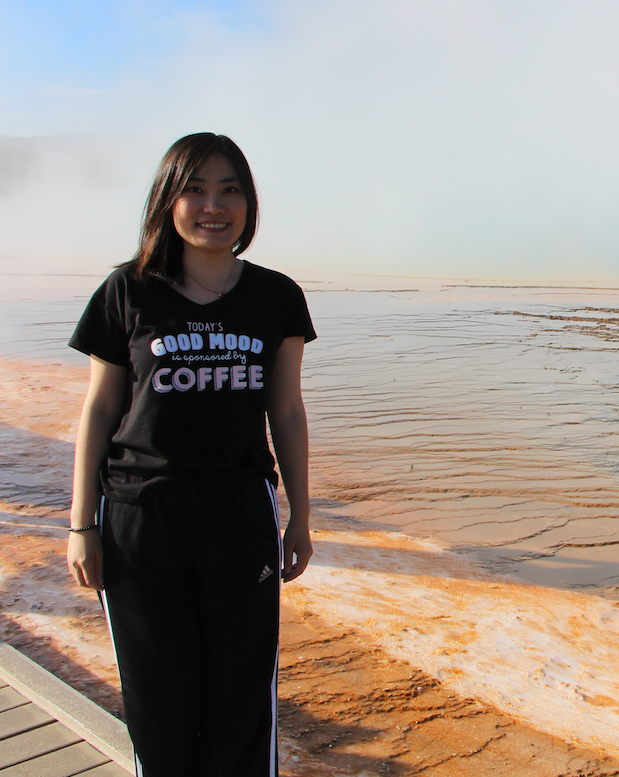

|  |
Yi LuanEmail: luanyi [at] google [dot] comResearch Scientist Google AI Language News |
I am a Research Scientist at Google AI Language. I did my Ph.D.
in ECE department
at University of Washington, advised by Prof. Mari Ostendorf and Prof. Hannaneh Hajishirzi. My research area is Natural Language Processing, mainly focus on information extraction, knowledge graph construction and text generation for conversations. Previously, I got my master degree in Hirose & Minematsu Lab at University of Tokyo on robust speech recognition. Here is my CV.
Entity, Relation, and Event Extraction with Contextualized Span Representations
David Wadden, Ulme Wennberg, Yi Luan, Hannaneh Hajishirzi
[pdf][code]
ACL, 2019
PaperRobot: Incremental Draft Generation of Scientific Ideas
Qingyun Wang, Lifu Huang, Zhiying Jiang, Kevin Knight, Heng Ji, Mohit Bansal, Yi Luan
[pdf]
ACL, 2019
A General Framework for Information Extraction using Dynamic Span Graphs
Yi Luan, Dave Wadden, Luheng He, Amy Shah, Mari Ostendorf, Hannaneh Hajishirzi
[pdf][code]
NAACL, 2019
Text Generation from Knowledge Graphs
Rik Koncel-Kedziorski, Dhanush Bekal, Yi Luan, Mirella Lapata and Hannaneh Hajishirzi
[pdf][Rik's code]
NAACL, 2019
Multi-Task Identification of Entities, Relations, and Coreferencefor Scientific Knowledge Graph Construction
Yi Luan, Mari Ostendorf, Hannaneh Hajishirzi
[pdf][data and code]
EMNLP, 2018
The UWNLP system at SemEval-2018 Task 7: Neural Relation Extraction Model with Selectively Incorporated Concept Embeddings
Yi Luan, Mari Ostendorf, Hannaneh Hajishirzi
[pdf][code]
Proceedings of SemEval, 2018
Multi-Task Learning for Speaker-Role Adaptation in Neural Conversation Models
Yi Luan, Chris Brockett, Bill Dolan, Michel Galley, Jianfeng Gao
[pdf]
IJCNLP, 2017
Scientific Information Extraction with Semi-supervised Neural Tagging
Yi Luan, Mari Ostendorf, Hannaneh Hajishirzi
[pdf]
[code]
EMNLP, 2017
Multiplicative Representations for Unsupervised Semantic Role Induction
Yi Luan, Yangfeng Ji, Hannaneh Hajishirzi, Boyang Li
[pdf]
ACL, 2016
LSTM based Conversation Models
Yi Luan, Yangfeng Ji, and Mari Ostendorf
[pdf][data]
Efficient learning for spoken language understanding tasks with word embedding based pre-training
Yi Luan, Shinji Watanabe, Bret Harsham
[pdf]
Interspeech, 2015
Recognition of stance strength and polarity in spontaneous speech
Gina-Anne Levow, Valerie Freeman, Alena Hrynkevich, Mari Ostendorf, Richard Wright, Julian Chan, Yi Luan, and Trang Tran
[pdf]
SLT, 2014
Relating automatic vowel space estimates to talker intelligibility
Yi Luan, Richard Wright, Mari Ostendorf, and Gina-Anne Levow
[pdf]
Interspeech, 2014
Semi-supervised noise dictionary adaptation for exemplar-based noise robust speech recognition
Yi Luan, Daisuke Saito, Nobuaki Minematsu, Keikichi Hirosei
[pdf]
ICASSP, 2014
Performance improvement of automatic pronunciation assessment in a noisy classroom
Yi Luan, Masayuki Suzuki, Yutaka Yamauchi, Nobuaki Minematsu, Shuhei Kato, Keikichi Hirose
[pdf]
SLT, 2012